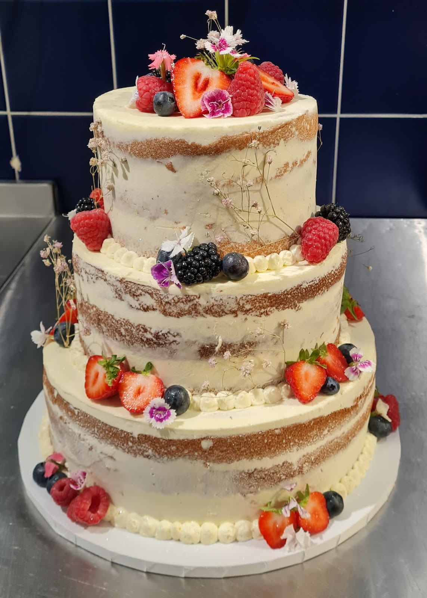
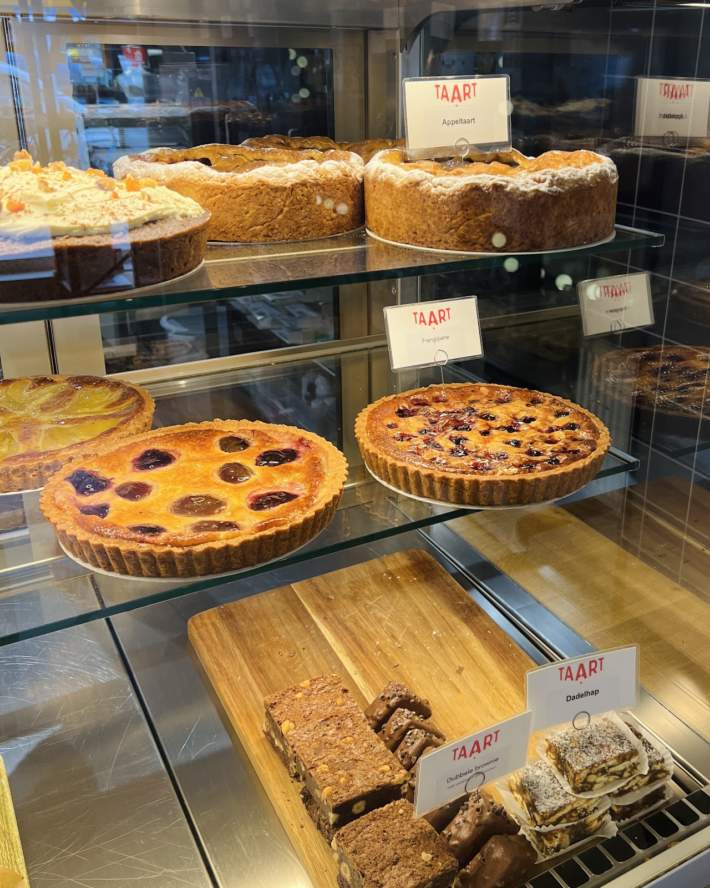
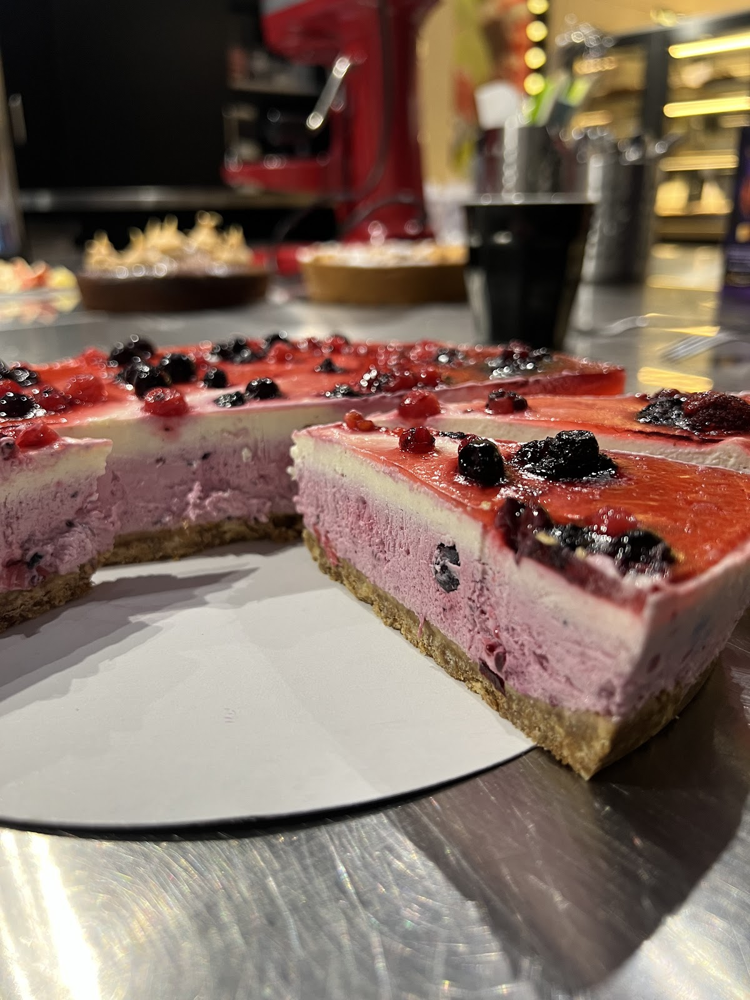
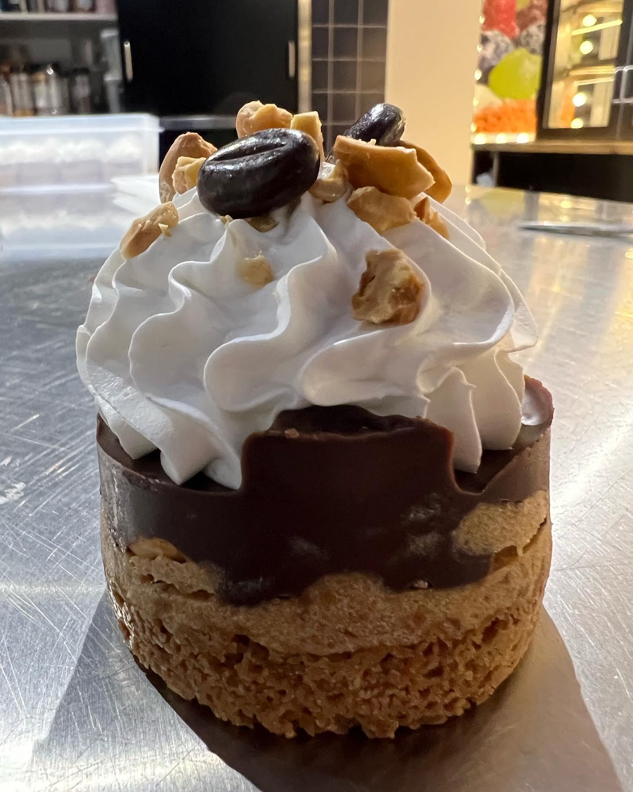
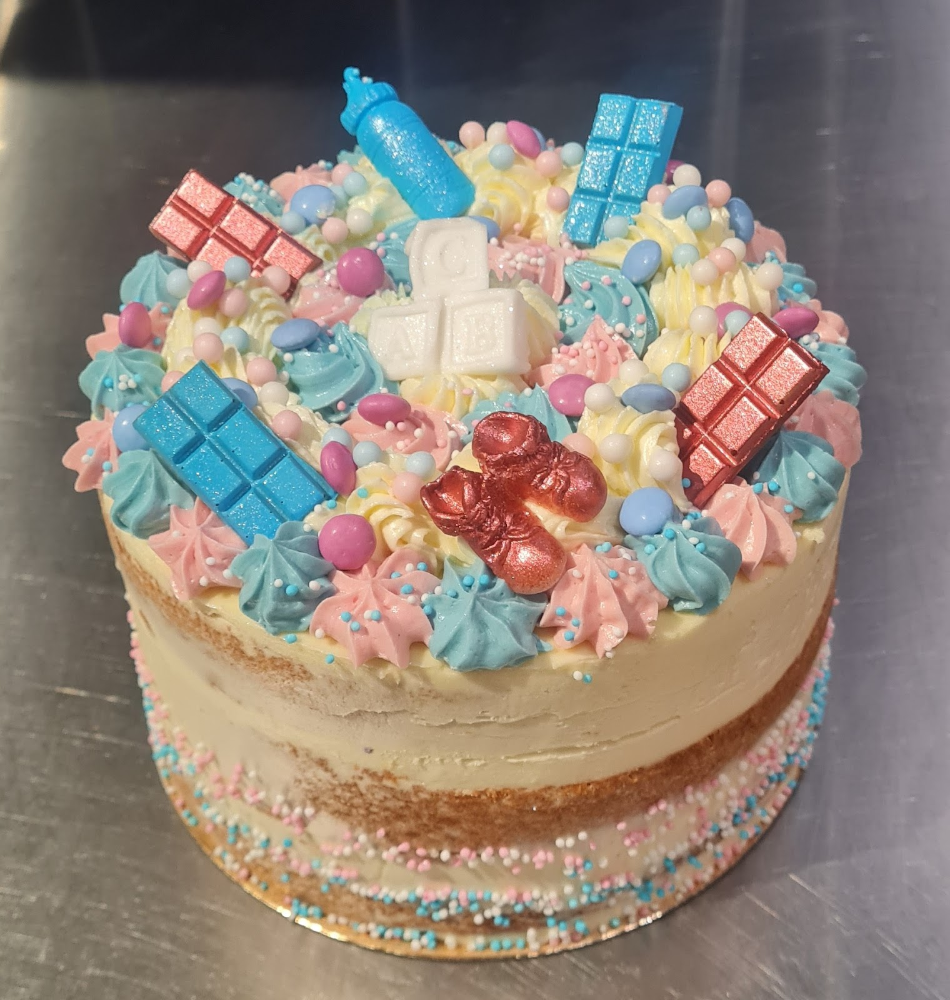
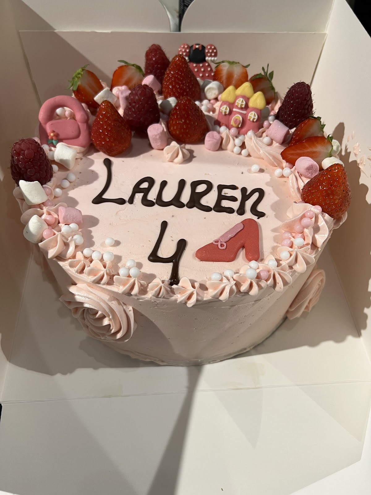
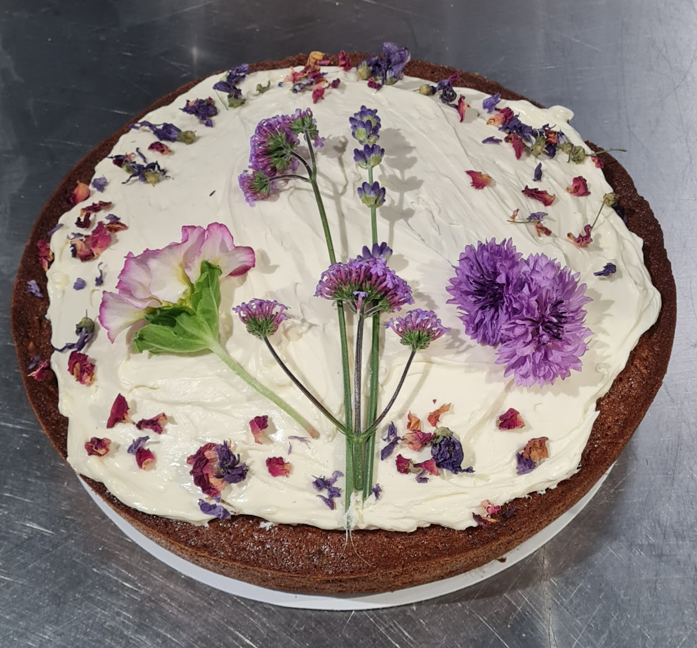
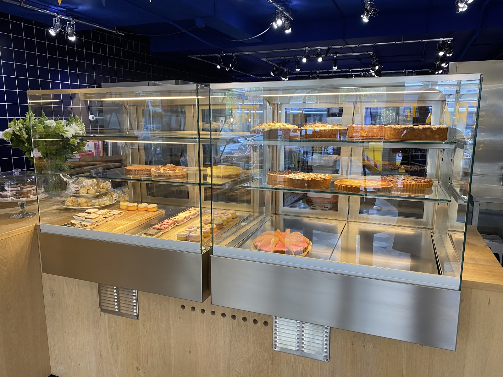

Taartenwinkel en bakkerij aan de Händelstraat, Utrecht
Mooie taarten, weinig poespas.
Homemade taarten, gebak en koekjes uit onze eigen bakkerij. Pure smaken, zo min mogelijk toevoegingen en vers uit de oven.
4,7 uit 70 Google-reviews

Wat er vandaag in de vitrine staat.
Appeltaart, frangipane, dubbele brownies, dadelhappen. Alles gebakken in onze eigen bakkerij, achter de winkel. Een greep uit het vaste assortiment:



Taarten
Gebak en lekkers
Cupcakes met jullie logo kan ook, vanaf € 40,00. Zin in iets bijzonders? Vraag het gerust, we denken graag mee.
Zo bestel je een taart.
Wil je zeker weten dat jouw taart er is? Geef je keuze dan twee werkdagen van tevoren aan ons door. Morgen al nodig? Bel even of loop binnen, dan kijken we wat we kunnen doen.
Bestel telefonisch: 030 276 4410-
1
Kies je taart
In de winkel blader je door ons boekje met taarten, of je kijkt vooraf online. Dieetwensen? Vraag het de bakker, die legt het je graag uit.
-
2
Geef het twee werkdagen vooraf door
Via de webwinkel, telefonisch of in de winkel. Taart voor dinsdag? Dan moet je bestelling vrijdag vóór 12.00 uur binnen zijn. Je krijgt een orderbevestiging per mail.
-
3
Ophalen of laten bezorgen
Je bestelling ligt op de afhaaldag vanaf circa 9.00 uur klaar. Doordeweeks bezorgen we in de gemeente Utrecht, vanaf € 25,00 bestelwaarde. De bezorgkosten zijn € 6,25.
Iets te vieren? Dan bakken we je feesttaart.
Een verjaardagstaart met naam, een gender reveal, een bloementaart of meerdere smaken voor een groot feest. Voor een bruiloft maken we ook stapeltaarten, bruidstaarten en Sweet Tables: een gevarieerde taartentafel waar iedereen iets lekkers vindt.
Er is veel mogelijk. Kom gerust langs om de mogelijkheden te bespreken.



Wat klanten zeggen.
4,7 uit 70 Google-reviews
"Heerlijke taarten, spoorpunten & brownies, maar ook superleuke cadeaus & kaarten verkrijgbaar bij deze sympathieke winkel. Wil je zeker zijn dat een taart er is, neem dan 2 werkdagen van tevoren contact op. Mijn favoriet is frangipane."
"Onze gender reveal taart was prachtig en heerlijk! Super!"
"Afgelopen week twee dadelhappen mee genomen voor thuis, verslavende dadel-gebakjes voor bij de koffie met een heerlijke karamelsmaak!"
"voor mijn verjaardag een feesttaart besteld. ben daarvoor in de winkel geweest. ze hadden een boekje waar ik even in heb gebladerd en mijn keuze heb gemaakt. (...) de taart was precies zoals ik het wilde en had aangegeven."
"We hadden dieet eisen en toen ik erom vroeg werd alles netjes en duidelijk uitgelegd door de bakker zelf. Je merkt dat de bakker met veel passie en expertise zijn taarten bakt."

Meer dan taart: een winkel vol Utrechts lekkers.
Haal koffie of thee to-go en neem iets lekkers mee. Op de schappen vind je vooral dingen uit Utrecht: bekers van EchtWaar, het enige echte cakeblik van de Dom, eigen chocolade creaties, koffie van Nordkapp, jam van Twisted en limonade van de Roze Bunker.
Daarnaast taartkaarsjes en decoratie, Taart.-cadeaubonnen en cadeaupakketjes in een mooie transparante zak. Stel ze zelf samen of geef je budget door, dan maken wij er iets leuks van.
Taart voor op kantoor?
De collega's verrassen met iets anders dan een slagroomtaart of vlaai? We voorzien taarten eventueel van jullie logo, bezorgen ze bij je collega's en betalen op factuur is geen probleem. Ook voor (kerst)pakketten.
Kom langs aan de Händelstraat.
Händelstraat 79a
3533 GJ Utrecht
Vragen over een taart, een feest of een zakelijke bestelling? Bel of mail ons gerust.
Openingstijden
- Maandag09.00 tot 14.00
- Dinsdag09.00 tot 17.00
- Woensdag09.00 tot 17.00
- Donderdag09.00 tot 17.00
- Vrijdag09.00 tot 17.00
- Zaterdag09.00 tot 16.00
- Zondaggesloten
Je bestelling ligt op de afhaaldag vanaf circa 9.00 uur klaar. Bezorgen in de zomervakantie kan beperkt, alleen in telefonisch overleg.